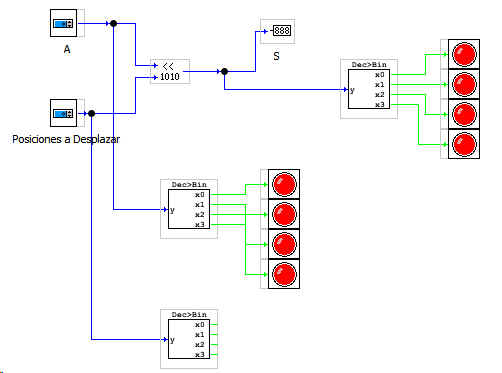
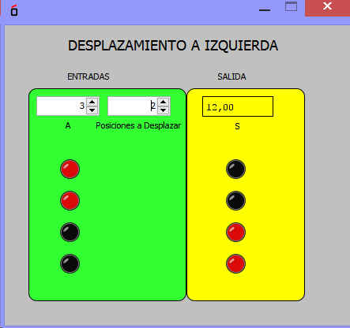

Este bloque es un registro binario de DESPLAZAMIENTO de bits a la IZQUIERDA.
La entradas:
A representa el número binario
B representa el número de posición a desplazar los bits de la entrada A
La salida:
S es el número binario desplazado

